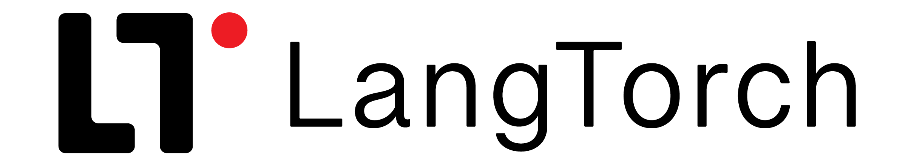

LangTorch is a framework that accelerates development of complex language model applications by leveraging familiar PyTorch concepts.
While existing frameworks focus on connecting language models to other services, LangTorch aims to change the way you approach creating LLM applications by introducing a text tensor system governed by simple rules that unify working with texts, chats, markup languages, prompt templates and prompting techniques, tokens, embeddings, LLM calls and tools under seamless parallelization and integrated with PyTorch. The result? Less code, faster development and more intricate LLM applications.
Quickstart guide: 
The LangTorch Framework
Instead of providing wrapper classes for users to memorize, LangTorch introduces flexible objects that, while governed by simple rules, enable all kinds of text formatting, templating and LLM operations. This lets developers think about what they want to build, instead of how the classes were named. LangTorch components subclass their numerical PyTorch counterparts, which lets users apply their existing coding skills to building novel LLM app architectures. The design of the package is geared towards users who want to test and create new architectures or methods that increase the utility of LLMs, rather than streamlining the most common chat and RAG architectures.
Note the package is early in its development and some features may be unstable or unfinished! Use for research rather than production purposes
The framework is centered around these objects and utilities (to skip to results, see how compact full Retriever and RAG implementations are):
TextTensors 
inherits functionalities from
torch.Tensor, but holds structured text as entries. TextTensors allow us to structure text information geometrically and dynamically inject this data into LLM calls.The utility of Tensors, as used in Torch, relies on their ability to calculate simultaneously products of several weights. The corresponding feature in LangTorch allows several prompts to be formatted on several inputs, by defining the product of
text1*text2 similarly to text1.format(**text2).
prompt_templates = TextTensor(
[["{name}: {greeting}!"],
["{greeting}, {name}!"]]
)
x = prompt_templates * TextTensor(
{"greeting": "Hello", "name": "Alice"}
)
print(x)
[[Alice: Hello!]
[Hello, Alice!]]
from langtorch import TextModule
prompts = [["Summarize this text: {}"],
["Simplify this text: {}" ]]
parallel_tasks = TextModule(prompts, activation="gpt-4o")
# Do multiple tasks on multiple inputs
inputs = TextTensor([text1, text2, text3])
outputs = parallel_tasks(inputs)
print(outputs.shape)
torch.Size([2, 3])
TextModules
are the compositional building blocks. A subclass of
torch.nn.Module, TextModules are reusable "layers", whose weights are TextTensors, and which instead of an activation function can include the activation of an LLM call on the dynamically created text inputs.Instead of many clunky retrievers, chains, chats or agents, all can be defined as
TextModules with different forward calls. These can then be easily included as submodules in complex modules that in the forward pass perform any parts of common architectures, like operations on embeddings, retrieval, parallel LLM API calls, batched local LLM inference, actions and so on.
Supporting PyTorch utilities
LangTorch implements textual versions of many PyTorch utilities. TextTensors can be accessed, reshaped, squeezed, unsqueezed and so on just like torch tensors.
Moreover, using regular torch functions they can be summed (text join), stacked, concatenated, used in tensor datasets, and even traced with autograd. In the near future this ability will be used in automatic prompt optimization given a text description of our "loss function".
x = TextTensor([["a", "b"],
["c", "d"]])
# Indexing
x_col = x[:, 0]
# Reshaping, stacking, squeezing
x_col = x_col.reshape(2, 1)
x_col = torch.concat((x_col, x_col, x_col))
print(x_col.squeeze())
[ a c a c a c ]
from torch.utils.data import DataLoader, TensorDataset
inputs, targets = TextTensor(df["task"]), TextTensor(df["answer"])
dataset = TensorDataset(inputs, targets)
# Batch size for llm calls
dataloader = DataLoader(dataset, batch_size=16)
llm = OpenAI("gpt-4")
check_answer = TextModule("Is this response the same as the target? ", activation=llm)
for i, (inputs, targets) in enumerate(dataloader):
llm_answers = llm(inputs)
loss = check_answer(llm_answers +"\nTarget: "+targets)
x = TextTensor([["a", "b"],
["c", "d"]])
# Addition concatenates texts
x2 = x + x[0] # Adding first row with broadcasting
print(x2)
# We can add many entries by summing
x3 = torch.sum(x, dim=0)
print(f"x2:\n{x2}\nx3:\n{x3}")
x2:
[[aa bb]
[ca db]]
x3:
[ ac bd ]
import torch
tensor1 = TextTensor([["Yes"], ["No"]])
tensor2 = TextTensor(["Yeah", "Nope", "Yup", "Non"])
torch.cosine_similarity(tensor1, tensor2)
tensor([[0.6923, 0.6644, 0.6317, 0.5749],
[0.5457, 0.7728, 0.5387, 0.7036]])
Text, Tokens and Embeddings
Apart from streamlining work on texts,
TextTensors can hold multiple types of representations of the same text and automatically switch between acting as strings when printed, as embeddings when inputted into torch.cosine_similarity and as tokens when passed to a local LLM.
Richer text representations
Every
Text entry of a TextTensor is structured, such that they can be constructed from and formatted into any markup language. This unified structure allows for a systematic treatment of diverse objects like chat histories, chunked documents, document stores, dictionaries, text meta-data, extracted named entities and code.
The example illustrates how a Text can be chunked into segments that occupy separate entries of the created TextTensor, which allows us to quickly transform each paragraph separately.
from langtorch import Text
text = Text(some_string)
transform = TextModule("Rewrite to improve clarity: ",
activation="gpt-4")
# Chunk into paragraphs and transform
paragraphs = text.split("\n")
result = transform(pargraphs)
# Join new entries separated with new line characters
rewritten_text = (result +"\n").sum()
Dive In and Get Started
Install LangTorch with:
pip install langtorch
Next steps:
-
Quick-Start Tutorial
Get building with LangTorch in 5 minutes
-
Reference
Learn how to use
Textobjects,TextTensors,TextModules,Activationsandtorchfunctions with LangTorch -
Discord
Join the Discord community to for fast bug fixes and support!
-
Github
Join us in improving the LLM application dev experience!
About
LangTorch is an open source python package by Adam Sobieszek (University of Warsaw; Jutro Medical). Contributions, comments and issue submissions are very much welcomed.
Contact: contact@langtorch.org
I'd like to thank Tadeusz Price, Hubert Plisiecki, Jakub Podolak and Mikołaj Boroński for their help in testing and explaining the package, as well as the University of Warsaw and Jutro Medical for supporting early development.